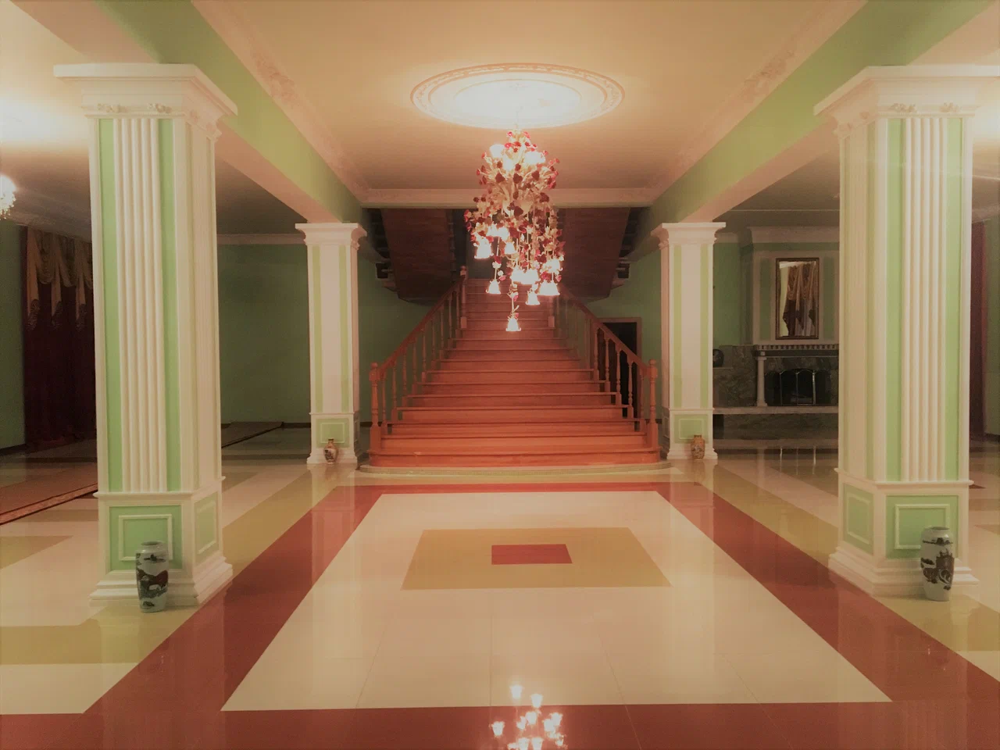
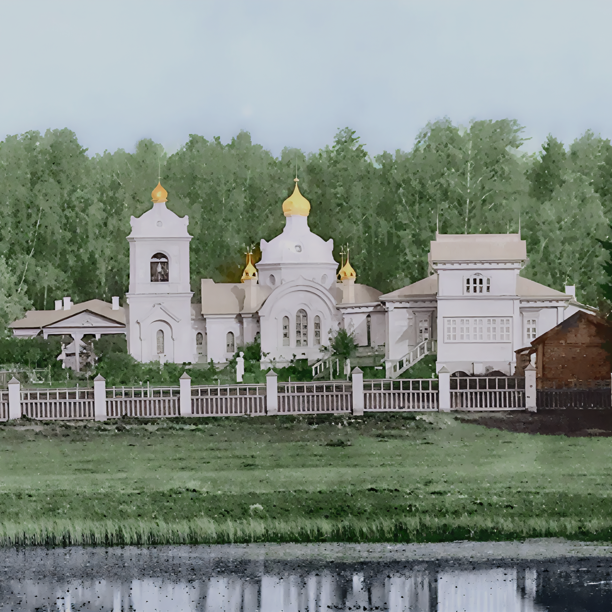
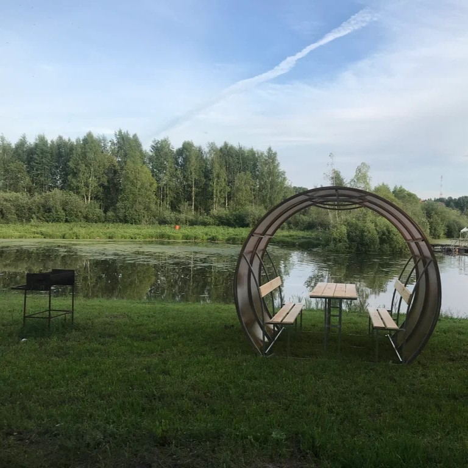
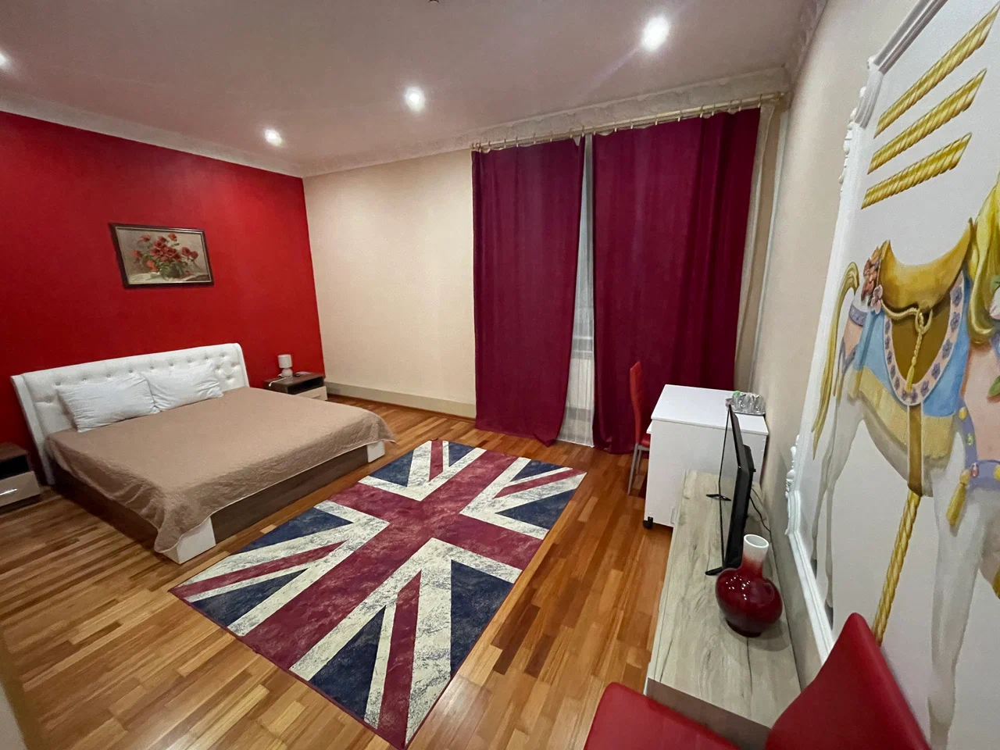
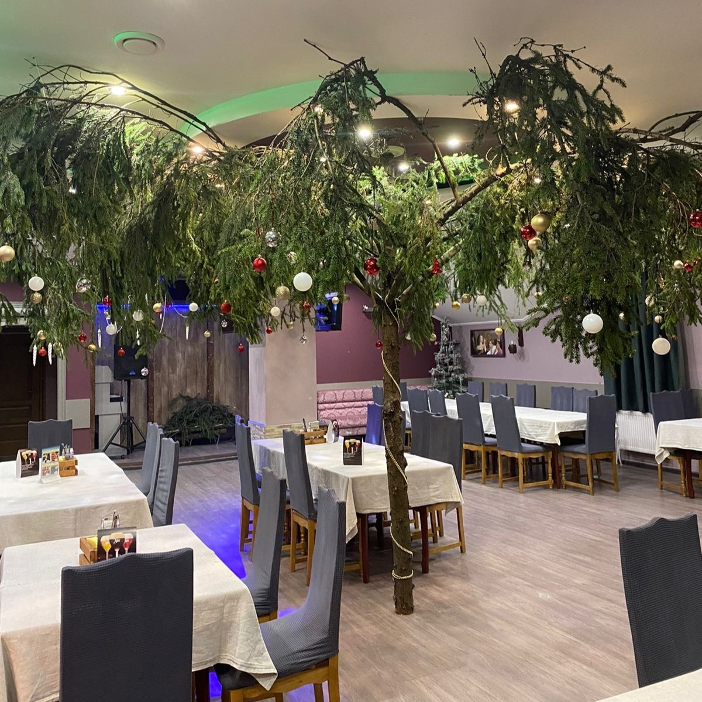

14-00 - 16-00 Заезд в гостиницу
Гостиница Верона 3* - расположена в тихом месте, с просторными номерами, царским холлом и домашним гостеприимством.
17-00 посещение банного комплекса
20-30 свободное время или игра в монополию в зале ресторана
с проживанием и развлечениями
Предлагаем выходной тур в ближайшем подмосковье на 3 дня.

14-00 - 16-00 Заезд в гостиницу
Гостиница Верона 3* - расположена в тихом месте, с просторными номерами, царским холлом и домашним гостеприимством.
17-00 посещение банного комплекса
20-30 свободное время или игра в монополию в зале ресторана

9-00 Литургия в Спасском храме, общение с настоятелем храма о.Сергий Райчуков
10-00 завтрак (трапезная храма, продукты от местных фермеров)
Спасский храм с приделом Феодоровской иконы Божией Матери был построен в 1707 году в правление Петра Великого его стольником Г.А. Племянниковым. После его смерти в 1713 году Спасское-Кощеево принадлежало его вдове и их сыну П.Г.Племянникову, после смерти которого в 1773году по указу Екатерины II село принадлежало его жене Е.Г.Племянниковой.В 1852- 1856г.г. село значится во владении помещицы Г. Билавиной.Затем Спасское-Кощеево приобрёл граф А.Е.Комаровский. В 1877-1879 г.г. церковь была полностью перестроена и приписана к Благовещенской церкви села Братовщина.В 1887 году усадьбой, которая перешла ему от графа Комаровского, владел Аполлон Александрович Майков. Последним владельцем усадьбы был его сын Анатолий Апполонович Майков (1886-1953).
После революции, в 1919-1920 годах, храм был разобран до основания. Действует времменный храм.

12-00 рыбалка с обедом на открытой веранде, с дегустацией ягодной настойки
19-00 ужин в ресторане с дегустацией пива
20-00 дискотека 80-х 90-х
с выступлением Алексея Сапрыкина (Dr. Lexx)
С 09-00 до 10-00 Завтрак в ресторане
10-30 Посещение сырной лавки КОСТРОМА СЫРНАЯ с дегустацией сыров с бокалом вина
Костромской сыр – вкусный и ароматный, а сама Кострома зовётся «сырной столицей России»...
12-00 выезд с гостиницы

* размещение 2-местное 1-местное за доп.плату

* Ресторан Лесной Паб - расположен не далеко от гостиницы, с домашней кухней, крафтовым пивом и дружеской обстановкой.
ВСЕ ВКЛЮЧЕНО - 24500р
Адрес: Пушкинский район п. Лесной ул. Пушкина 8а
Телефон/WhatsApp/Telegram: 8 (925) 229-46-61
Телефон: +7 (985) 757-10-11
Почта: olieva@mail.ru